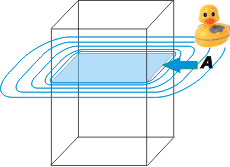

NO ME SALEN
EJERCICIOS RESUELTOS DE FÍSICA DEL CBC
FLUIDOS - PRINCIPIO DE ARQUÍMEDES |
|

|
| |
| Hidrostática 20) Un cajón rectangular de madera de 60 Kg flota en agua parcialmente sumergido. Al agregarle un
peso adicional de 50kg se hunde 3 cm más en el agua. Calcular el área de la sección transversal del
cajón y el volumen de la parte sumergida antes de agregar el peso adicional (agua = 1 g/cm3). |
No seamos macabros... no hay ningún motivo para pensar que ese cajón es un ataúd. Pongamos un cajón de caras transparentes a flotar verticalmente al lado de un patito.
Me parece que la lección más importante que tiene este ejercicio es que, como te debe haber pasado en muchos otros, te resulta imposible saber cómo lo vas a resolver, por qué camino vas a perseguir la solución ni cuándo vas a encontrarla.
Lo que tenés que aprender a hacer es a renunciar de antemano a esas pretenciones. No seas inteligente... sólo aplicá tus conocimientos de física a cuanta situación te presenten en los enunciados, y cuando menos lo esperes vas a estar enfrentando un sistema de ecuaciones e incógnitas, Ahí se acabó la física, y lo que sigue es álgebra. Capito? |
|
|
|  |
Esta es la primera situación, A, en la que el cajón flota dejando un volumen sumergido, VA, y otro volumen por arriba de la superficie del agua, que no nos interesa (casi nunca nos interesa, pero si vos querés ponele un nombre).
El principio de Arquímedes para esta situación dice que el empuje, EA, vale:
EA = ρH2O . VA
|
|
|
|
Y además, como el cajón está en equilibrio...
EA = PA = 600 N
Vamos a la segunda instancia. Metí un coso de 50 kilos adentro del cajón. No importa de qué cosa está hecho el coso, lo que importa es que ahora el conjunto pesa 110 kilos. A esta situación la llamé B. |
|
|
 |
No sé si se nota... pero el cajón está un poco más hundido... unos 3 cm para ser más preciso. La línea de flotación de antes (me preocupé de pincharle una flechita antes de agregarle el peso de 50 kilos) quedó más abajo, ahora sumergida. Y la nueva línea de flotación, B, quedó 3 cm más arriba que A.
El principio de arquímedes para esta nueva situación dice:
EB = ρH2O . VB
|
|
|
|
Y como ahora también el cajón está en equilibrio, tendremos:
EB = PB = 1.100 N
Otra relación fácil de entender es que entre VA y VB hay una relación muy sencilla: la diferencia entre esos dos volúmenes es la tajada de cajón que de hundió entre una situación y la otra, o sea un volumencito igual a la superficie de la base del cajón, S (que el enunciado llama sección transversal y vos me explicarás por qué), por la diferencia entre niveles A y B, o sea, los 3 cm.
VB = VA + S . 0,03 m
A menos que sepas algo de cuántica o de parapsicología, ya no podés decir más nada de todo esto. Pero si te tomás el trabajo de contar... verás que hay 5 ecuaciones con 5 incógnitas. (Ji, ji, ji, jo, ju, ja). Yo te lo hago (me molesta el llanto). Voy a juntar las dos primeras ecuaciones y las dos siguientes:
PA = ρH2O . VA
PB = ρH2O . VB
Las resto mutuamente y reemplazo con la última:
PB – PA = ρH2O . ( VA + S . 0,03 m – VA )
PB – PA = ρH2O . S . 0,03 m
Despejo la sección transversal:
S = (PB – PA ) / ρH2O . 0,03 m
S = 500 N/ 10.000 N/m3 . 0,03 m
|
|
Si además de aprender Física te divertiste, no dejes de comprar
Por las barbas de Juno,
la novela policial que mientras la escribía no paraba de reírme. |
|
|
|
| Y el resto de las incógnitas te las dejo para vos. Pa que no te aburras. |
|
|
| DESAFÍO: ¿Por qué habré puesto un patito? |
|
 |
| Algunos derechos reservados.
Se permite su reproducción citando la fuente legítima, o sea, este sitio. Última actualización
jun-11. Buenos Aires, Argentina. |
|
|
| | |
|
|